Analista de Datos — CABA, Argentina
Estudiante de Ciencia de Datos e Inteligencia Artificial orientado al análisis de datos y BI. Experiencia en proyectos con SQL, Python y Tableau, incluyendo dashboards, modelos predictivos y soluciones integradas con cloud. Actualmente en formación: especialización en administración de bases de datos y redes. Busco desarrollarme como Data Analyst, BI Analyst o Salesforce Trainee.
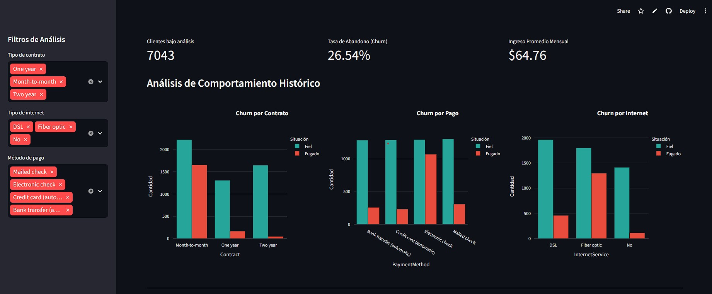
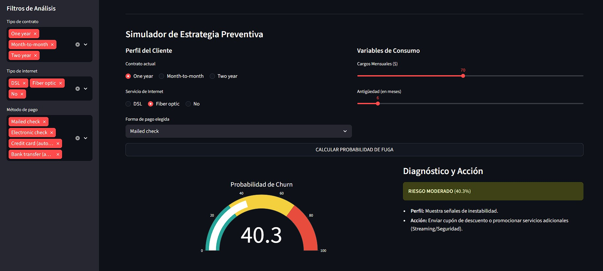
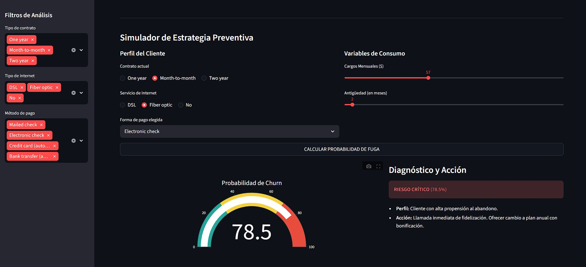

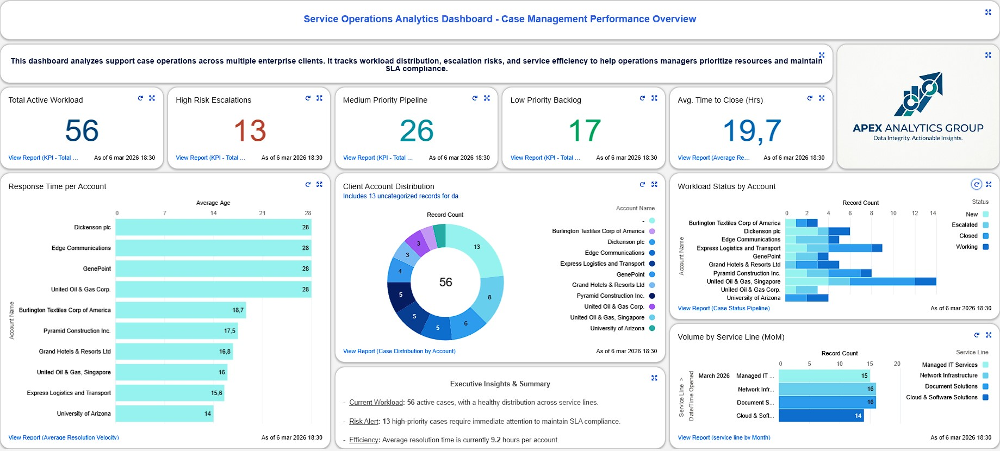
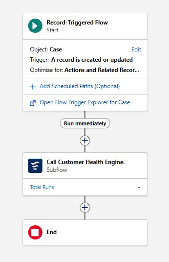
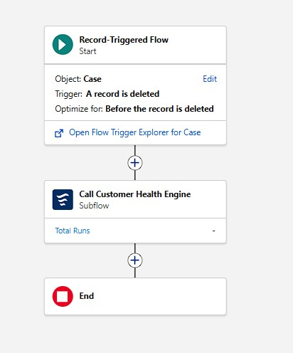
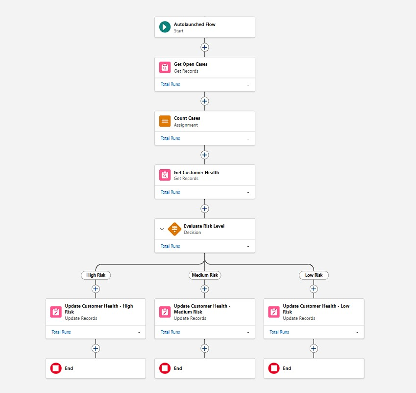
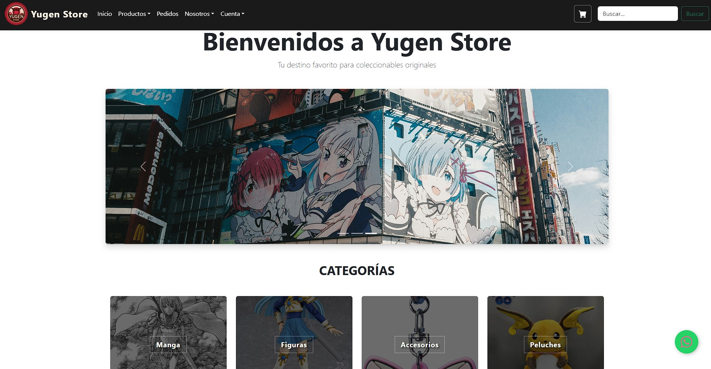
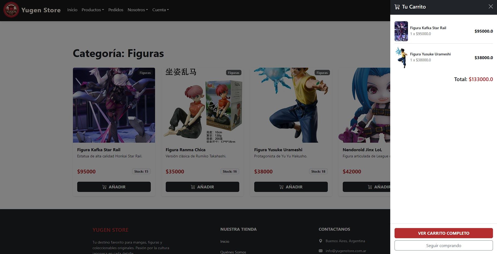
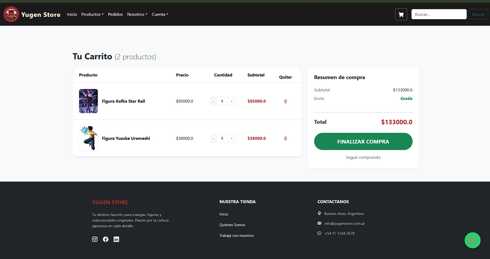
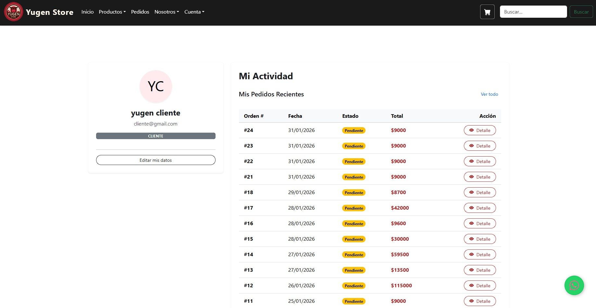
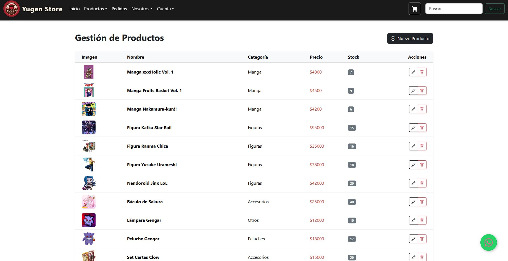
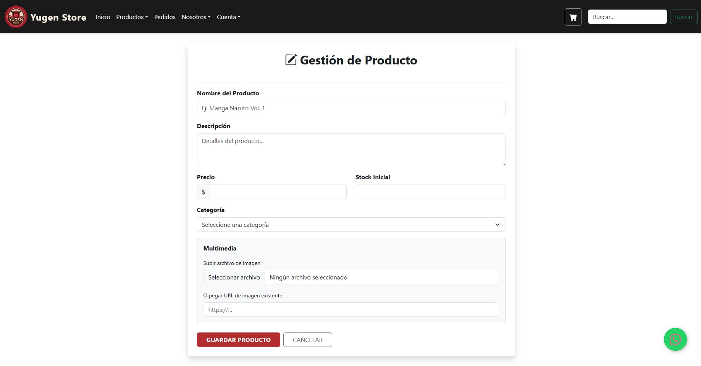
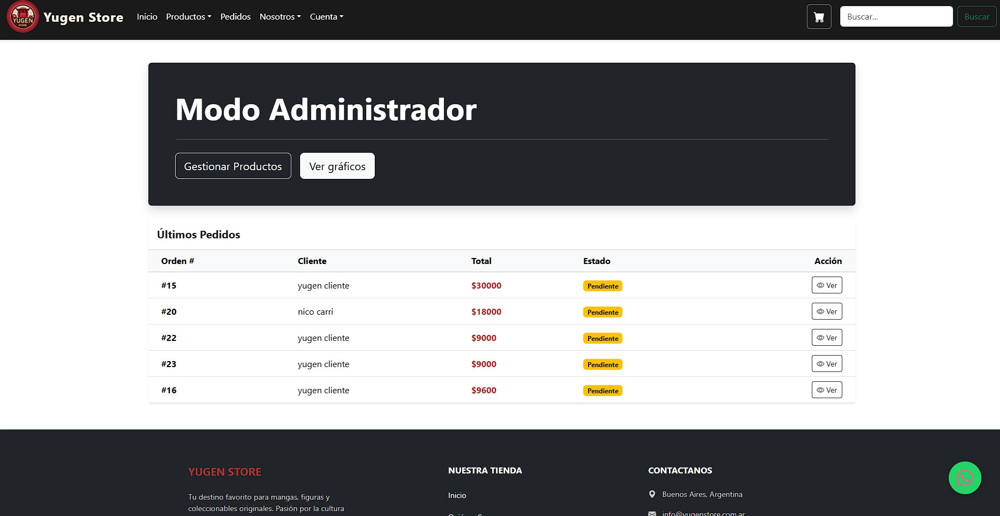
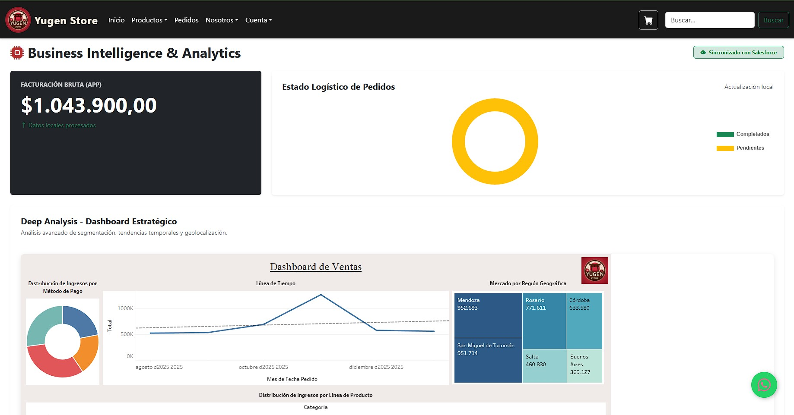